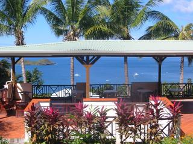

<div> 
	  <table>
		<tr>
				<td width="363px"><div>
				  <p><strong><font color="#0000FF"><em>Survoler l'&eacute;cran avec la souris</em></font></strong></p>
				  <p><font size="3" color="#000099" face="Arial, Helvetica, sans-serif"><font color="#000000"><i><font face="Arial"><font size="2"><b>Si vous &ecirc;tes &agrave; la recherche de l'aventure et des paysages exotiques &agrave; d&eacute;couvrir, choisissez un s&eacute;jour aux Antilles ! Le Nid Tropical vous accompagne dans des mini croisi&egrave;res en Cara&iuml;bes sur catamaran et vous propose des s&eacute;jours plong&eacute;e &agrave; Malendure ou aux &icirc;lets Pigeon, la fameuse r&eacute;serve de Cousteau &agrave; Guadeloupe.</b></font></font></i></font></font></p>
				</div>
				  <p><font size="3" color="#000099" face="Arial, Helvetica, sans-serif"><font color="#000000"><i><font face="Arial"><font size="2"><b>Sylvie et Jean Pierre,</b></font></font></i></font></font><font size="2"><b><font face="Arial"><i><font color="#000000"> 
					  propri&eacute;taires du Nid Tropical, vous invitent &agrave; passer des s&eacute;jours inoubliables dans leurs <a href="TARIF.HTM">bungalows</a> 
						  avec piscine, enti&egrave;rement r&eacute;nov&eacute;s et re&eacute;quip&eacute;s, dans des g&icirc;tes pas chers 
						  ainsi que dans un <a href="APPARTEMENT.HTM">appartement</a> de vacances en Guadeloupe, Bouillante.</font></i></font></b></font></p>
					  <p><font size="2"><b><font face="Arial"><i><font color="#000000">D&eacute;couvrez nos offres de location bungalows &agrave; Bouillante, dans un cadre paradisiaque avec une 
						    des plus belles vues des Antilles sur les &icirc;lets Pigeon et la mer des 
						    Cara&iuml;bes dans la baie de Malendure, nous vous proposons :</font></i></font></b></font></p>
					  <p><font size="2"><b><font face="Arial"><i><font color="#000000">- 6 Bungalows 
						</font><font size="2"><b><font face="Arial"><i><font color="#000000">de 3 
						personnes</font></i></font></b></font> <font color="#000000">avec brasseur 
						d'air et option clim. selon votre choix </font></i></font></b></font></p>
					  <p><font size="2"><b><font face="Arial"><i><font color="#000000">- 4 Bungalows 
					  <font size="2"><b><font face="Arial"><i>climatis&eacute;s de 4 
					  personnes</i></font></b></font></font> </i></font></b></font></p>
					  <p><font size="2"><b><font face="Arial"><i><font color="#000000">- 1 appartement 
						&agrave; louer &agrave; Guadeloupe, Bouillante de 4 &agrave; 6 personnes avec brasseurs d'air et climatisation compos&eacute; 
						de 2 chambres + 2 salles d'eau WC et d'une grande cuisine am&eacute;ricaine 
						tout confort sur terrasse.</font></i></font></b></font></p>
					  <p><font size="2"><b><font face="Arial"><i><font color="#000000">Tous nos <a href="TARIF.HTM">bungalows</a> 
						, <a href="APPARTEMENT.HTM">appartement</a>, carbet et piscine, b&eacute;n&eacute;ficient de cette vue mer 
						exceptionnelle. De plus, vous b&eacute;n&eacute;ficiez d'acc&egrave;s internet WIFI gratuit et de Loubine !</font></i></font></b></font></p>
					  <p><font size="2"><b><font face="Arial"><i><font color="#000000">Le Nid Tropical est au coeur d'un jardin tropical fleuri agr&eacute;ment&eacute; 
					    d'une Piscine homologu&eacute;e et contr&ocirc;l&eacute;e par la DASS tous 
						  les mois de 11,50m x 5,50 m et d'un carbet de 150m&sup2; pour vos loisirs. </font></i></font></b></font></p>
					  <p><b><i><font color="#000000" size="2" face="Arial">H&eacute;bergements &agrave; Bouillante, Guadeloupe : contactez-nous afin de faire votre r&eacute;servation ! </font></i></b></p>
					  <p align="center"><b><u><i><font color="#FF0000" size="2" face="Arial">Ch&egrave;ques vacances ANCV accept&eacute;s</font></i></u></b></p>
					  <p align="center"><i><font face="Arial" size="2" color="#000000">Recommand&eacute; 
						par le</font></i></p>
					  <p align="center"> </p>
		
			</td>
			<td>
				<div> 
				  <p><a href="left" onMouseOut="MM_swapImgRestore()" onMouseOver="MM_swapImage('ENVIE.gif','','malendure.jpg',1)"></a><br/><a href="#" onMouseOut="MM_swapImgRestore()" onMouseOver="MM_swapImage('nid_tropcal_sylvie_021.jpg','','piscine3.jpg',1)"></a></p>
				  <p align="left"><font color="#FF0000"><i><b><font face="Arial, Helvetica, sans-serif">Pour 
					votre plaisir, le plus du Nid tropical !</font></b></i></font></p>
				  <p align="left"><b><i><font face="Arial, Helvetica, sans-serif" color="#FF0000">&quot;LOUBINE&quot; 
					pour vous balader, cliquez sur la page ---&gt; D&eacute;tails...</font></i></b></p>
				  <p align="left"><a href="#" onMouseOut="MM_swapImgRestore()" onMouseOver="MM_swapImage('loubine','','loubine1.jpg',1)"></a></p>
				  <p align="left"><a href="http://www.guadeloupe-guadeloupe.com/" 
				target="_blank"></a> 
				  </p>
				  <p align="center">&nbsp;</p>
			  </div>
			  <script src="javnidindex.js" type="javascript"></script>
			    <script src="http://www.google-analytics.com/urchin.js" type="text/javascript">
				</script>
				<script type="text/javascript">
				_uacct = "UA-1055754-1";
				urchinTracker();
				</script>
			</td>
		</tr>
	</table>